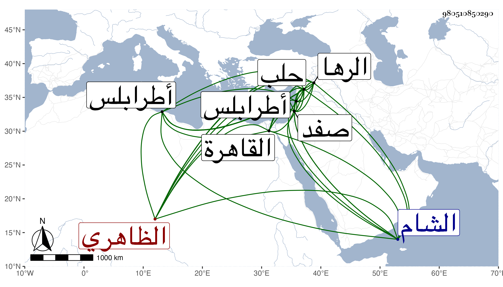

0902Sakhawi.DawLamic.ITO20230111-ara1.EIS1600.980510850290
Biography ID: 980510850290
864
ازدمر الظاهري جقمق قريب الأشرف قايتباي أمره عشرة ثم عمل أتباك حلب بعد قتل إينال الحكيم ونقله عنها قبل خروجه إليها لنيابة صفد بعد موت بلباي ثم لنيابة طرابلس بعد القبض على نائبها يشبك النحاسي فدام بها سنين إلى أن نقل لنيابة حلب لانتقال قانصوه اليحياوي عنها إلى الشام وكان ممن شهد وقعة الرها مع الدوادار الكبير وقطع أنفه وشفته مع القبض عليه فلما توجه جانبك حبيب رسولا من الأتابك أزبك بسبب الصلح المتضمن إطلاق المقبوض عليهم كان ممن أفرج عنه وجيء به إلى القاهرة مع الأتابك فأعطى إمرة مجلس وكانت شاغرة بموت لاشين ثم سافر باش التجريدة المجهزة لعلاء الدولة بن دلغادر في سنة ثمان وثمانين فلما قتل نائب جانبك المدعو ودربس أعيد لنيابة حلب وابتنى بها حماما هائلا وريعا وكذا تربة بجوار الأنصاري عقب موت زوجته سورباي بل أسرع في بناء خان عظيم بالقرب من سوق الصابون .
